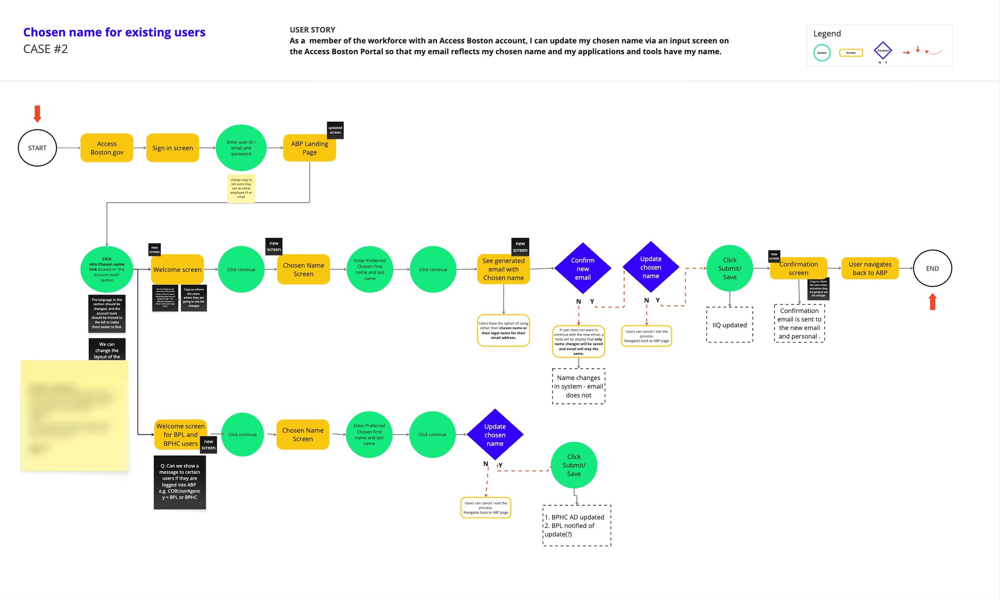
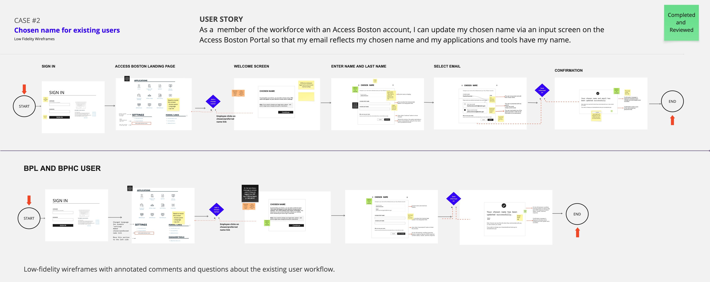
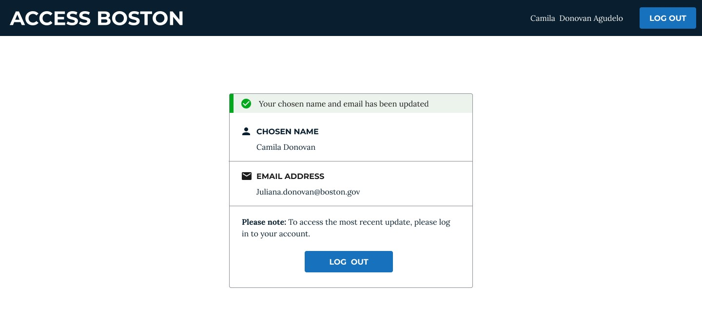
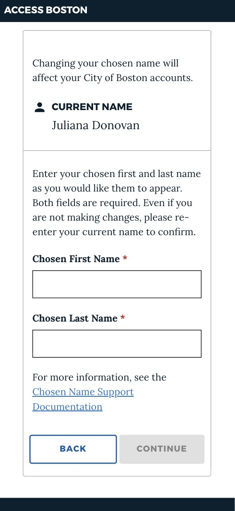
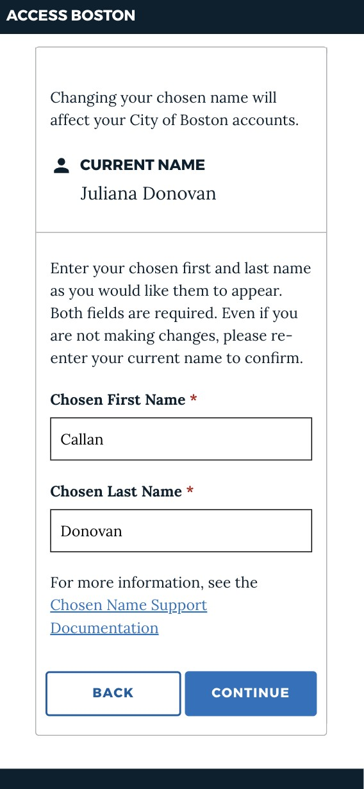
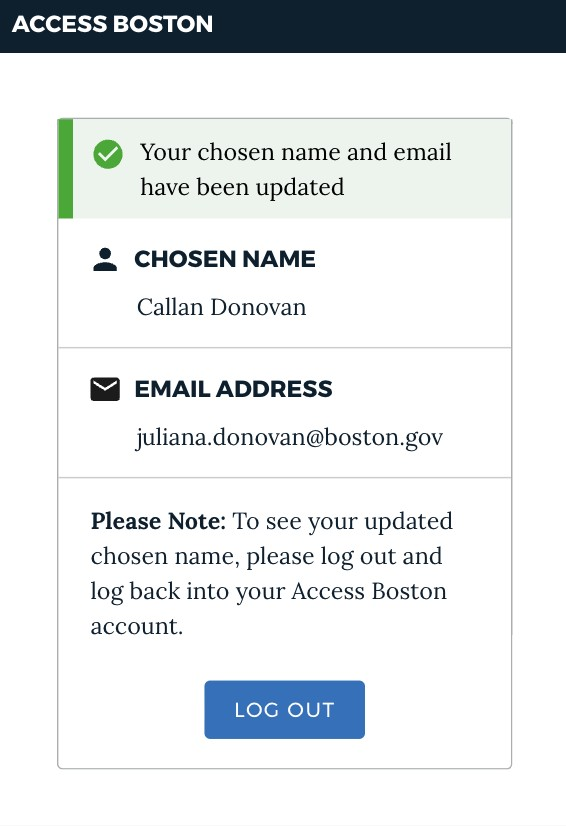

A small decision with a big impact
Updating a chosen name doesn't necessarily mean someone wants to change their email address.
Rather than making that assumption for employees, I designed the experience to give them a choice when their system configuration allows it.

Employees previously had no simple way to update their chosen name across the City's internal systems. What should have been a straightforward change required manual requests, coordination across teams, and updates across multiple applications.
I led the end-to-end UX/UI design of a new self-service workflow within Access Boston, giving employees a faster and more transparent way to update their chosen name while accounting for differences across departments, systems, and identity providers.
The problem
A simple change had become a complex process.
Before this project, employees who wanted to update their chosen name often had to navigate a manual process involving service desk requests, HR, application owners, and multiple internal systems.
Everything happened over email: employees created a ticket, then waited to hear back. A single name change could take weeks.
For employees
- They didn't know where to start or which systems needed to be updated.
- Changes could take time to propagate.
- There was limited visibility into the status of their request.
- New employees could have accounts created with a name they did not use.
For HR and IT
- Requests required manual coordination.
- Different systems had different requirements and ownership.
- Changes were not always synchronized the same way across departments.
The design challenge
How might we give employees a simple, predictable way to update their chosen name while accounting for different systems, permissions, and departmental constraints?
Understanding the current experience
Rapid research to find where the process broke down.
Because the project had a short timeline, I used rapid qualitative research. I spoke with employees who had previously tried to change their name or email and asked them to walk through their experience from start to finish. I also worked with HR, IT, and other stakeholders to understand the operational and technical side.
Employees were doing the coordination themselves.
People had to figure out which teams or systems to contact instead of having one place to start.
There was little visibility into what was happening.
Employees weren't sure whether a request had been processed or when changes would appear.
The experience started too late for some new employees.
Preferred names weren't consistently captured before accounts were created.
The experience depended on the employee's systems.
Not everyone had the same permissions, applications, or identity-provider configuration.
Four core user needs
Clarity
Know what will change and what won't.
Autonomy
Make the change without unnecessary manual steps.
Speed
Complete the request quickly.
Consistency
See information reflected accurately across systems.
Mapping the system
The interface was simple. The system behind it wasn't.
I mapped the complete workflow to understand what happened after an employee submitted a change: backend dependencies, system ownership, departmental differences, and potential points of failure. The map became a shared view for design, product, engineering, and HR.


What the map revealed
How long will changes take to propagate?
Employees needed realistic expectations about when their updated information would appear across applications.
Where can the systems behave differently?
Different employee groups had different configurations, so the same interaction couldn't always produce the same outcome. This changed the direction of the design.
Designing for different system realities
One experience, two honest paths.
It was tempting to create one universal workflow. But some employees could have their email updated automatically, while employees at organizations such as the Boston Public Library and the Boston Public Health Commission had different identity-provider and system constraints. Rather than showing everyone an option that wouldn't work for them, I designed two paths. The only difference is the email step.
Name and email
Where systems supported it, employees choose whether their email changes along with their chosen name.
- Welcome
- Chosen name
- Email choice
- Confirmation
Name only
For Boston Public Library and Boston Public Health Commission employees, the email step doesn't appear. They update their chosen name and go straight to confirmation, so they're never offered a choice their system can't support.
- Welcome
- Chosen name
- Confirmation
From workflow to interface
Structure and logic first, visual design second.
I started with low-fidelity wireframes to focus on structure, decision points, and system logic before investing in visual design. They helped the team see where employees needed more context, which decisions needed to be explicit, where system differences had to be communicated, and how to handle edge cases.
Once the flows were aligned with stakeholders and engineering, I moved into high-fidelity design.


Design principles
Make the experience predictable
Employees understand what they're changing and what happens next.
Give users control
Employees decide whether to update their email when the system allows it.
Reduce cognitive load
The interface explains complexity instead of asking employees to understand the systems.
Design accessibly
Hierarchy, contrast, typography, interaction patterns, and responsive behavior were considered throughout.
Usability testing
Testing every step with real employees.
Before launch, about 10 City employees tested the workflow in a staging version of Access Boston. Each person had one task, update your chosen name, and followed a 24-step script covering the full journey: signing in, finding the link, reading the welcome screen, entering a name, choosing an email, submitting, then logging out and back in to check that the change had carried through.
For every step, participants marked whether it worked and added comments, then answered a short anonymous survey.
About 10 participants
City employees working through the real flow in a test environment.
24-step script
A pass or fail check and comments for each step, from sign-in to logging back in.
Anonymous survey
Participants shared how the experience felt once they finished.
What testing surfaced
Button states weren't always right
In testing, Continue was active before the name fields were complete. Fixed: Continue now waits until both fields are filled.
A help link led to a dead end
The Chosen Name Support Documentation link sent a participant to a Google sign-in page instead of the Access Boston help page. Fixed: the link now opens the help page directly.
Email options didn't always match reality
A participant with an older account saw a variation of their email as the "keep" option instead of the address they actually use. Fixed: the options now show each employee's actual current email.
Changes took longer than expected to appear
One participant logged back in after 5 minutes, and again an hour later, and still saw their old name in the banner. This confirmed what the system map predicted: employees need clear expectations about propagation time. Fixed: the update now appears as expected, and the confirmation screen tells employees to log out and back in to see it.
In the results I reviewed, 21 of 24 steps passed: participants found the link, understood the language on the welcome screen, and completed the submission. The issues clustered where the interface depended on other systems, which is exactly where the design needed to be most honest. Every issue found in testing was fixed before launch.
The final experience
Built into the Access Boston employee portal.
01
Easy to find, clear from the start
Employees open Update Chosen Name from their account settings instead of filing a service request. The first screen explains what is changing, what isn't, and how a chosen name differs from a legal name.
02
Clear choices
Employees see their current name and enter the chosen first and last name they want to appear. Both fields are required, and a link to support documentation is always close by.
03
Clear expectations
Where supported, employees choose between a new email that matches their chosen name or keeping their current one. A consent checkbox confirms they understand the change applies across City of Boston accounts.
04
Immediate feedback
After submitting, employees see a clear confirmation of their new chosen name and email, and receive a confirmation email. Because updates can take time to reach every system, the screen also asks them to log out and back in to see the change everywhere.

05
Designed for different contexts
The experience works on desktop and mobile, with accessibility considered throughout the interaction and UI design. On a phone, the same steps stack into a single column with full-width buttons, and Continue stays disabled until both name fields are filled.

Empty form, Continue disabled

Fields filled, Continue enabled

Confirmation
The result
From a fragmented manual process to self-service.
- 1,000+
employees have used the workflow to update their chosen name.
- Weeks to ~40 seconds
From emails and tickets to a single self-service flow.
- Self-service
Employees start the change in Access Boston, not through a manual request.
- Consistent
Where supported, updates reach connected applications automatically.
What I learned
Simple on the surface, honest underneath.
The visible experience is only part of the product.
Simplifying the interface didn't mean eliminating complexity. It meant handling it in the right place, so the interface could feel simple without pretending the process was simple.
A single experience doesn't always mean a single workflow.
Different paths for different system capabilities gave us a clearer, more honest experience than forcing everyone through the same one.
Accessibility and empathy shaped the product, not just the UI.
For something as personal as a chosen name, language, control, privacy, and clarity mattered as much as the visual interface.
The goal wasn't only to make the process faster. It was to make a personal change feel straightforward, respectful, and within the employee's control.